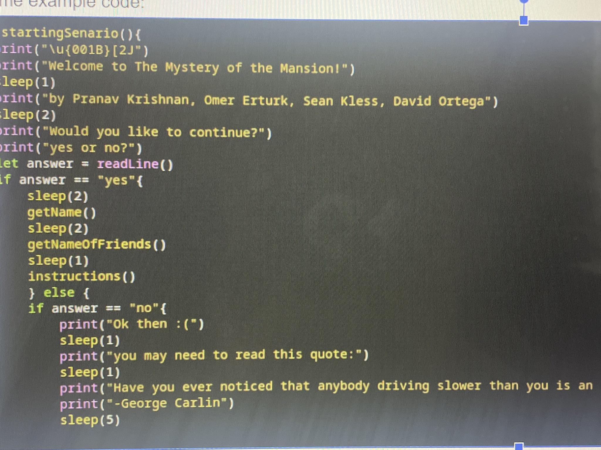

My Isp was a text-based story game called the Mystery of the Manor.
Concept: I wanted to create a game where you could choose your own adventure and make meaningful choices that affect the story in unique and interesting ways.
The Plot : You and three of your friends decide to rent a mansion for the summer. However, the mansion is haunted and traps people that stay in it. While you and your friends are preparing for the night, the power goes out and a storm hits the house. It is up to the player to uncover the mysteries that the manor holds and to survive the night.
Problems faced: figuring out How to make the story have elements (characters, villains, etc.) that make changes to the story without making the code unreadable.
How we overcame these issues: We wrote the story with enough details to keep it interesting but not so many which might make it long. We also added things like plot twists, reveals, etc. to make it interesting. We also used functions for every choice in the game to keep track of the code and also use short pieces of code that can function properly and make the game work
Some example code:

This is an example of how we organized our code to make our story connect between scenes

We used variables are the read line function to save the users names and other information throughout the game
Reflection: I really enjoyed making this game but I had expected to have made a more elaborate story with better code. Even though my game didnt meet my expectations I learned a lot while writing and coding this game.